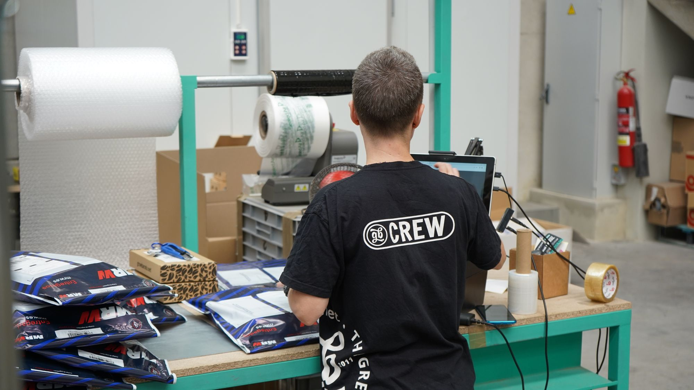

Supply-Chain-Digitalisierung für eine durchgängige Lieferkette
Einkauf im ERP, Lager im eigenen System, Transport per E-Mail und Excel: In vielen Lieferketten bricht der Datenfluss an jeder Grenze. Supply-Chain-Digitalisierung vernetzt Ihre Lieferkette über Schnittstellen zu Lieferanten und Kunden hinweg — mit gemeinsamen Daten über Systemgrenzen hinweg, für mehr Transparenz und belastbare Liefertreue.
Ein kurzer Überblick reicht. Wir melden uns werktags innerhalb von 24 Stunden.
Warum der Datenfluss an jeder Systemgrenze abreißt
Supply-Chain-Digitalisierung scheitert selten an der Technik. Drei Muster trennen fast jede gewachsene Lieferkette in getrennte Inseln.
Insellösungen mit getrennten Daten
Einkauf, Lager, Produktion und Transport arbeiten je in ihrem System, dazwischen E-Mails und Excel. Diese Insellösungen mit getrennten Datenbeständen erzeugen Medienbrüche an jeder Schnittstelle, doppelte Pflege und Bestände, die je nach Quelle anders aussehen. Niemand hat den durchgängigen Blick — und genau der entscheidet über Liefertreue.
Werkzeug zuerst gekauft, Prozess später
Ein Transportmanagement- oder Bestandstool wird angeschafft, weil ein Anbieter überzeugt hat — und bildet dann den alten Ablauf bloß digital ab, samt der manuellen Abstimmung drumherum. Wird das Werkzeug zuerst gekauft und der Prozess später gebaut, wächst eine weitere Insel, während die Kette weiter zerfällt.
Daten verstreut, Kennzahlen stimmen nicht
Liefertermine, Bestände und Lieferantenleistung liegen in verschiedenen Systemen und werden unterschiedlich gezählt. Sind die Daten verstreut und stimmen die Kennzahlen nicht, wird jede Planung zum Ratespiel — und die manuellen Workarounds zur Absicherung wachsen immer weiter.

Was wir für die digitale Lieferkette leisten
Vier Bausteine, die aufeinander aufbauen — von der Roadmap bis zur durchgängig vernetzten Kette.
Plan entlang der Kette
Wir durchleuchten Einkauf, Lager, Produktion und Transport auf die Stellen, an denen Medienbrüche und doppelte Pflege am meisten kosten. Daraus entsteht eine priorisierte Roadmap — welcher Abschnitt zuerst, mit welchem Nutzen —, die die Kette zusammenführt, wo eine bloße Tool-Liste sie weiter zerteilen würde.
Systeme und Partner verbinden
Wir planen die Schnittstellen zwischen ERP, Lager- und Transportsystemen sowie zu Lieferanten und Kunden so, dass Bestell-, Bestands- und Lieferdaten durchgängig fließen. Ziel ist eine gemeinsame Datengrundlage über Unternehmensgrenzen hinweg — auf gemeinsamen Formaten, die jeder Partner mittragen kann.
Transparenz und Planung schaffen
Aus verbundenen Daten entsteht ein durchgängiger Blick auf Bestände, Liefertermine und Lieferantenleistung. Wo es trägt, ergänzen wir vorausschauende Planung — etwa für Bedarfe und Auslastung — als Unterstützung der Planenden, die die Annahmen kennen und die Kontrolle behalten.
Pilot bis in den Betrieb führen
Wir bringen den bewährten Piloten dorthin, wo gearbeitet wird: in den Einkauf, ins Lager, in die Disposition. Schnittstellen, Rückfallwege und Zuständigkeiten werden festgelegt, bevor die erste Abteilung produktiv damit arbeitet. Erst wenn die Lösung dort eigenständig läuft, gilt der Abschnitt als abgeschlossen.
Von der zerschnittenen zur vernetzten Lieferkette
Jede Phase endet mit einem Ergebnis, das Sie behalten — auch wenn Sie danach nicht weitermachen.
Ist-Aufnahme der Kette und ihrer Systeme
Wir nehmen auf, welche Systeme und Excel-Schattenwelten entlang der Kette im Einsatz sind, wo Daten doppelt gepflegt werden und wo der Fluss zwischen Abteilungen und Partnern bricht. Daraus entsteht eine Landkarte Ihrer Lieferkette.
Plan und ersten Abschnitt festlegen
Aus der Aufnahme wählen wir gemeinsam den Abschnitt mit dem besten Verhältnis aus Nutzen und Machbarkeit und legen die Roadmap fest. Für diesen Abschnitt klären wir Datengrundlage, Schnittstellen und das, was Datenschutz und vertragliche Lage mit Partnern verlangen.
Pilot mit echten Bestell- und Bestandsdaten
Der Pilot läuft auf echten Daten eines abgegrenzten Abschnitts — etwa zwischen Einkauf und Lager oder zu einem Schlüssellieferanten. So zeigt sich früh, ob die Vernetzung trägt und wo die Schnittstellen nachgeschärft werden müssen.
Integration in Systeme und Partneranbindung
Der bewährte Pilot wird an ERP, Lager- und Transportsysteme angebunden und, wo nötig, an Lieferanten und Kunden. Berechtigungen, Rückfallwege und Standards werden festgelegt, bevor die erste Abteilung produktiv arbeitet.
Verankerung und Ausweitung
Ihre Teams lernen, die vernetzte Kette zu nutzen und zu pflegen. Eine schlanke Governance regelt, wer Abschnitte erweitert, wer Datenqualität prüft und wer eingreift, wenn etwas klemmt — und der nächste Abschnitt der Kette folgt.
Wo eine vernetzte Lieferkette verlässlich Nutzen stiftet
Vier Felder, in denen die Daten meist vorhanden sind und der Nutzen im Tagesgeschäft ankommt.
Ein Bestandsstand über die ganze Kette
Bestände in Lager, Produktion und Transit laufen an einer Stelle zusammen, mit einem einheitlichen Bild über alle drei Systeme hinweg. Disposition und Einkauf arbeiten mit demselben Stand — weniger Sicherheitsbestände, weniger Fehlmengen, weil die Zahl stimmt.
Liefertermine, die belastbar zugesagt werden
Wenn Auftrags-, Bestands- und Transportdaten verbunden sind, werden Liefertermine belastbar und faktenbasiert. Die Liefertreue steigt, weil Engpässe früher sichtbar werden — und Kunden bekommen verbindliche, belegbare Aussagen.
Leistung sichtbar, Risiken früher
Mit verbundenen Daten wird die Lieferantenleistung messbar: Termintreue, Qualität, Reaktionszeit. Abhängigkeiten und Risiken in der Kette werden früher sichtbar — Grundlage für eine resilientere Beschaffung, die Überraschungen im Wareneingang vorbeugt.
Sendungsstatus durchgängig im System verfolgen
Sendungsstatus und Transportdaten fließen direkt ins System ein und sind dort jederzeit abrufbar, sodass sich das Erfragen per E-Mail und Telefon erübrigt. Der Status ist durchgängig sichtbar, Rückfragen sinken, und niemand pflegt dieselbe Sendung in zwei Listen.
Von der einfachen Beschaffung bis zum globalen Netzwerk
Welche Vernetzung trägt, hängt von Ihrer Kette ab. Wir passen Roadmap und Schnittstellen an Ihren Typ an.
Produktionsversorgung
Material muss pünktlich an die Linie: Der größte Hebel liegt in der Verbindung von Bedarf, Bestand und Beschaffung, damit die Produktion nicht auf fehlendes Material wartet.
Handel & Distribution
Viele Artikel, viele Lieferanten: Hier zahlen Bestandstransparenz und automatisierte Nachbestellung am schnellsten ein — vom Wareneingang bis zur Auslieferung.
Mehrstufige Lieferketten
Lieferanten der Lieferanten: Der Schwerpunkt liegt auf Transparenz über mehrere Stufen und früher Risikoerkennung, damit Engpässe nicht erst im Wareneingang auffallen.
Internationale Beschaffung
Lange Wege, viele Schnittstellen, Zoll und Dokumente: Durchgängige Daten und Sendungsverfolgung machen Termine und Nachweise belastbar, mit einmaliger Erfassung der Dokumente an der Quelle.
Ersatzteil- und Servicelogistik
Hohe Variantenzahl, schwankender Bedarf: Verbundene Daten und vorausschauende Planung verhindern, dass Teile fehlen oder Lager überquellen.
Woran Sie merken, dass wir Lieferketten verstehen
Drei Zusagen, an denen Sie uns im Projektverlauf messen können.
Wir reden über den Fluss in der Kette
Wareneingang, Disposition, Sendungsverfolgung — wir kennen die Abläufe, über die wir reden. Ihre Disponenten erkennen bei uns sofort das Verständnis dafür, warum ein Tool im Tagesgeschäft scheitert, wenn es den Fluss an einer Stelle bricht.
Wir empfehlen auch das Nein
Trägt die Datengrundlage einen Abschnitt nicht oder fehlt die Schnittstelle zum Partner, sagen wir das vor dem Pilot — samt dem, was fehlt. Ein verschobener Abschnitt ist billiger als eine weitere Insel.
Wir bleiben bis in den Betrieb
Unsere Arbeit reicht über das Konzept hinaus bis zu einer vernetzten Kette, die in Einkauf, Lager und Disposition läuft und von benannten Personen verantwortet wird.
Wie wir Datenqualität, Recht und Betrieb absichern
Eine vernetzte Lieferkette berührt Datenqualität, Partnerverträge und Ausfallsicherheit. Dafür gibt es feste Leitplanken.
Eine stimmige Kennzahl für die ganze Kette
Bevor Daten verbunden werden, klären wir, welche Quelle für Bestand, Termin und Lieferantenleistung führt und wie eine Kennzahl definiert ist. So entsteht eine gemeinsame Datengrundlage, der Einkauf, Lager und Leitung gleichermaßen trauen.
Rückfallwege und Ausfallsicherheit
Eine vernetzte Kette darf nicht stehen, wenn ein System oder eine Partnerschnittstelle ausfällt. Wir planen Rückfallwege mit, damit Beschaffung und Auslieferung weiterlaufen — die Kontrolle bleibt bei den Menschen in Einkauf und Disposition.
Datenschutz und Verträge von Beginn an
Datenaustausch mit Partnern, Auftragsverarbeitung und Vertraulichkeit werden vor dem Pilot geklärt — Orientierung geben u. a. Veröffentlichungen des BSI und des BfDI. Datenschutz und vertragliche Lage sind Eingangskriterien und stehen vor dem Pilot fest.
Sorgfaltspflichten in der Lieferkette
Wer in Deutschland mindestens 1 000 Beschäftigte hat, muss nach dem Lieferkettensorgfaltspflichtengesetz Risiken in der eigenen Lieferkette prüfen, ein Beschwerdeverfahren anbieten und beides belegen können. Die Aufsicht liegt beim Bundesamt für Wirtschaft und Ausfuhrkontrolle, das die Prüfung der Unternehmensberichte derzeit ausgesetzt hat — die Prüf- und Nachweispflichten selbst bleiben davon unberührt. Für Ihr Vorhaben heißt das: Die Daten, die Sie ohnehin verbinden, sind genau die, aus denen dieser Nachweis entsteht. Was rechtlich für Sie gilt, entscheidet Ihre Rechtsabteilung — wir liefern die Datengrundlage.
Welche Fragen hören wir häufiger?
Die Fragen, die uns Supply-Chain-, Einkaufs- und Logistikleiter am häufigsten stellen — offen beantwortet.
Wo fangen wir mit der Digitalisierung der Lieferkette an?
Sollten wir nicht zuerst eine Supply-Chain-Software auswählen?
Warum scheitern Supply-Chain-Digitalisierungen so oft?
Wie vermeiden wir Insellösungen und Datensilos in der Kette?
Wie binden wir Lieferanten und Kunden an, die unterschiedlich aufgestellt sind?
Wie kommt der Pilot in den Betrieb?
Wie stellen wir sicher, dass die Lösung genutzt wird?
Was ist der Unterschied zwischen Digitalisierung und Transformation der Lieferkette?
Wie digitalisieren wir eine gewachsene Lieferkette bei laufendem Betrieb?
Wie lange dauert ein Supply-Chain-Digitalisierungsprojekt?
Was kostet eine Supply-Chain-Beratung?
Macht das auch unsere Lieferkette resilienter?
Weitere Themen zur Supply-Chain-Digitalisierung
Weiter zur Digitalisierungsberatung und zu den verwandten Themen im gleichen Bereich.
Sprechen wir über Ihren ersten Abschnitt.
Der erste Schritt ist ein Erstgespräch von 30–45 Minuten. Wir klären Ihre Ausgangslage, die wichtigsten Engpässe und ob CEx der richtige Partner ist. Wenn nicht, verweisen wir auf jemanden, der besser passt.
Erstgespräch anfragen →Welche Fragen klären wir vor Projektbeginn?
Supply-Chain-Digitalisierung muss über Abteilungs- und Unternehmensgrenzen hinweg funktionieren. Wir prüfen, wo Transparenz, Planung oder Steuerung den größten Nutzen bringen.
Wo fehlt heute Transparenz?
Wir identifizieren blinde Stellen bei Beständen, Lieferterminen, Engpässen, Forecasts oder Eskalationen.
Welche Daten teilen Teams und Partner?
Wir prüfen Verfügbarkeit, Qualität, Schnittstellen und Verantwortlichkeiten entlang der Lieferkette.
Wie wird aus Sichtbarkeit bessere Steuerung?
Wir klären, welche Entscheidungen schneller oder besser werden sollen und wer darauf reagiert.
Wie vermeiden wir neue Insellösungen?
Wir verbinden vorhandene Systeme und Prozesse so, dass der digitale Ablauf nicht an Abteilungsgrenzen endet.
Prozesse, Architektur, Change.
Johannes Reusch und Hans-Helmut "Hannes" Scheel führen CEx gemeinsam. Beide begleiten Mandate mit ihrem Team persönlich. Senior- und Executive-Erfahrung für Ihr Projekt von Anfang bis Ende.


- Branchenübergreifend · vom Mittelstand bis zum Konzern
- Strukturiertes Vorgehen · nachvollziehbar und dokumentiert
- DACH-weit tätig